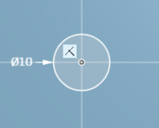
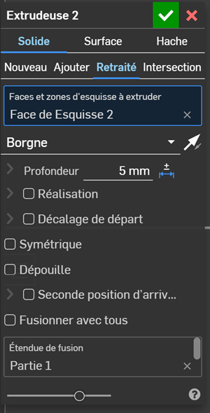
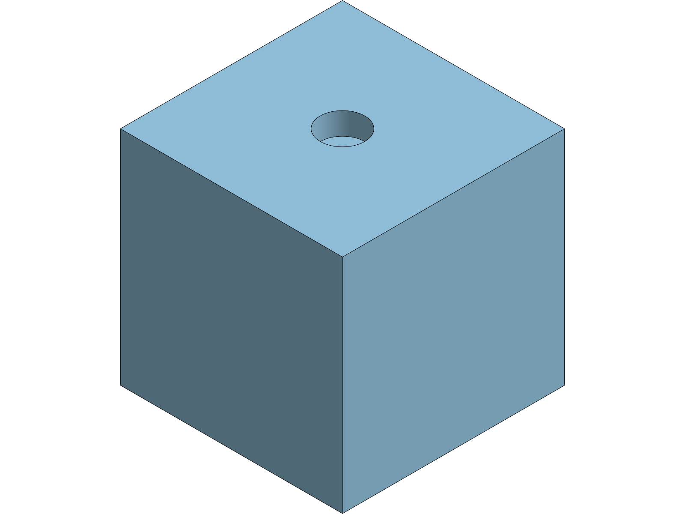
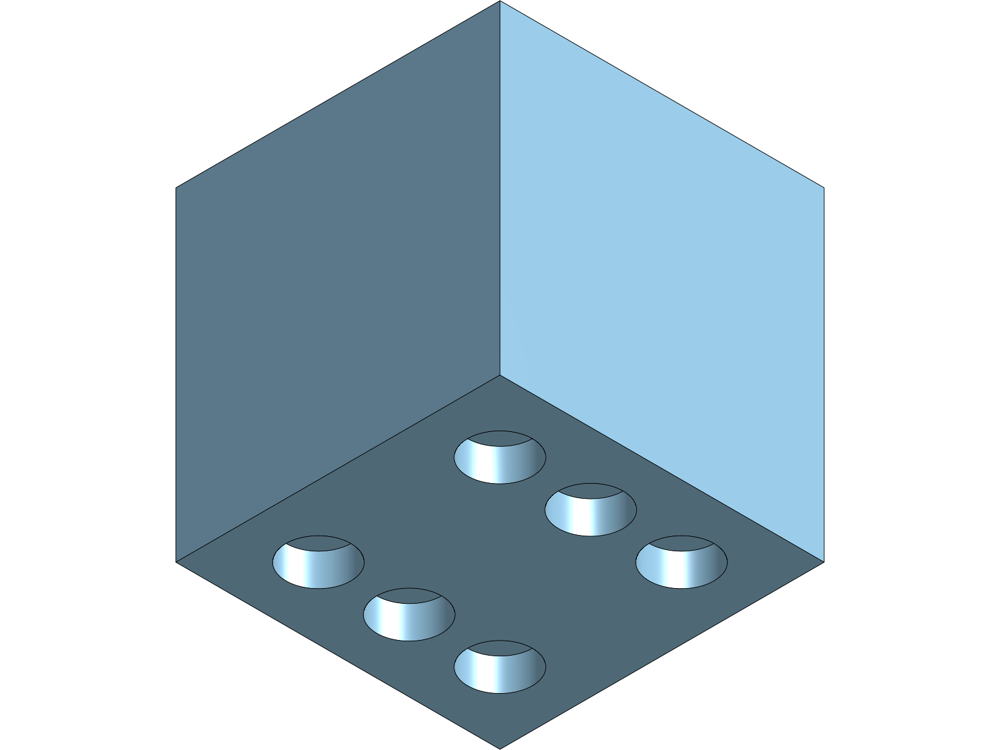

🎲 TP nº1 — Le dé
Tu vas construire un dé de 50 mm dans un logiciel de conception, de la feuille blanche jusqu'à la pièce prête à imprimer. Personne ne doit rester bloqué : chaque étape dit ce que tu dois voir.
🧭 Comment lire ce TP. En clair, ce que tu fais. En italique coloré, ce que tu dois voir se produire à l'écran — si tu ne le vois pas, ne continue pas : reprends l'étape. Les encadrés orange préviennent des pièges. À la fin de chaque partie, une image te montre ce que tu dois obtenir : compare, tu n'as besoin de personne pour te corriger.
1 · Ranger avant de commencer
Deux minutes, et tu retrouveras ton travail à la séance prochaine. Sans elles, tu recommenceras tout.
- Ouvre Onshape dans le navigateur et connecte-toi avec le compte de la classe.La page Documents s'affiche, avec le bouton bleu Créer en haut à gauche.
- Clique sur Créer, puis sur Document…Une fenêtre Nouveau document s'ouvre, avec un champ Nom du document.

Le bouton Créer est toujours en haut à gauche, quelle que soit la page. - Dans Nom du document, saisis
de-PRENOM-NOM(sans accent), puis clique sur Créer.Une fenêtre de travail s'ouvre. Ton nom de document s'affiche en haut, à côté du mot Main.À savoir avant de commencer : Le nom est imposé et sans accent : certains postes de la salle refusent les accents dans les noms de fichiers, et tu perdrais ton travail sans comprendre pourquoi. - Regarde en bas de la fenêtre : un onglet Part Studio 1 est déjà là.C'est l'atelier où l'on dessine les pièces. Au centre, trois rectangles gris se croisent : ce sont les trois plans, comme trois feuilles posées dans l'espace.
- Cherche un bouton Enregistrer dans la barre d'outils.Il n'y en a pas. Onshape enregistre tout seul, en continu : chaque geste est écrit dès que tu le fais. Ton travail est dans ton document, et tu le retrouveras depuis n'importe quel poste avec le même compte.À savoir avant de commencer : C'est la grande différence avec un logiciel installé sur l'ordinateur. Ne cherche pas la disquette : il n'y en a pas, et ce n'est pas un oubli.
🎯 Tu peux passer à la suite quand : ton nom apparaît en haut de la fenêtre, et tu saurais retrouver ce document demain.
💾 Enregistre ton travail maintenant. C'est le moment : si le poste redémarre, tu ne perds rien.
2 · Esquisser le carré
Une pièce en 3D commence toujours par un dessin en 2D, posé sur un plan. Ce dessin s'appelle une esquisse.
- Clique sur Esquisse, dans la barre d'outils en haut à gauche.Un panneau Esquisse 1 apparaît, et un message te demande de sélectionner un plan d'esquisse.

- Dans la liste de gauche, clique sur le plan Top.Le plan choisi se colore, son nom s'inscrit dans le champ Plan d'esquisse, et le message disparaît.À savoir avant de commencer : Top est le plan horizontal — celui du dessus. C'est celui qu'on choisit quand l'objet doit être posé à plat, comme un dé sur une table.
- Pour te placer bien en face du plan, appuie sur la touche N du clavier.Le plan pivote et se met à plat devant toi, comme une feuille posée sur la table. Deux lignes se croisent au centre : c'est l'origine.À savoir avant de commencer : N comme « normal à l'écran ». Retiens ce raccourci : c'est celui qu'on utilise le plus souvent, et il évite de viser le petit cube en haut à droite.
- Ouvre la flèche à côté de l'outil rectangle et choisis Rectangle à partir du centre.Le pointeur change de forme.

À partir du centre, et pas par sommet : c'est ce choix qui placera le dé pile au milieu, sans avoir à le recentrer ensuite. - Un outil de dessin reste actif tant que tu ne le quittes pas. Pour en sortir, appuie sur Échap.Le pointeur redevient une flèche : tu peux de nouveau sélectionner au lieu de dessiner.À savoir avant de commencer : C'est le premier réflexe à prendre. Un élève qui « n'arrive plus à cliquer sur rien » a presque toujours un outil de dessin encore actif.
- Clique sur l'origine, écarte la souris, et clique une seconde fois.Un rectangle apparaît, avec de petits symboles sur ses côtés : ce sont les contraintes que le logiciel a posées tout seul.À savoir avant de commencer : Ne cherche pas à tomber juste : la taille exacte se règle à l'étape suivante. Trace n'importe quel rectangle et avance.
- Regarde la couleur des traits.Ce qui est noir est fixé et ne bougera plus. Ce qui est bleu est encore libre : tu peux l'attraper et le déplacer. Le logiciel te dit en permanence où il en est — cette lecture-là te servira dans tous les logiciels de conception.
- Clique sur l'outil Cotation (la double flèche), puis sur le côté du haut, puis pose la cote à côté.Une case s'ouvre avec un nombre à virgule.

Ce nombre est un exemple : c'est la taille de ton rectangle à toi, pas la valeur à saisir. ⚠️ La valeur visible sur cette image est un exemple : ne la recopie pas, saisis la tienne.
- Tape
50et valide avec Entrée.Le rectangle change de taille immédiatement, et la cote affiche 50.À savoir avant de commencer : Si Onshape écrit 90° au lieu d'une longueur, c'est que ta cote a été posée sur la ligne d'un plan : il a compris « angle ». Annule et repose-la un peu plus loin. Ce n'est pas une faute de ta part. - Recommence pour le côté de gauche, et tape
50.Tous les traits deviennent noirs : l'esquisse est complètement définie, plus rien ne peut bouger.
Tout en noir : c'est le signal que le dessin est verrouillé. - Valide l'esquisse avec la coche verte, en haut du panneau.Le panneau se ferme et Esquisse 1 s'ajoute à la liste de gauche.

🎯 Tu peux passer à la suite quand : ton carré mesure 50 sur 50, tous ses traits sont noirs, et Esquisse 1 apparaît dans la liste.
💾 Enregistre ton travail maintenant. C'est le moment : si le poste redémarre, tu ne perds rien.
3 · Donner du volume : l'extrusion
Un dessin plat ne s'imprime pas. On lui donne une épaisseur : c'est l'extrusion. Le carré va monter de 50 mm et devenir un cube.
- Clique sur l'outil Extruder dans la barre d'outils.Un panneau Extruder 1 s'ouvre et un aperçu du volume apparaît, en jaune ou en gris clair.

- Dans le champ Profondeur, saisis
50.L'aperçu s'ajuste : la hauteur devient égale au côté. C'est un cube. - Valide avec la coche verte.Le cube devient gris plein. Dans la liste de gauche, Pièces (1) apparaît : il existe maintenant de la matière.

🎯 Tu peux passer à la suite quand : tu vois un cube, et la liste indique Pièces (1).
💾 Enregistre ton travail maintenant. C'est le moment : si le poste redémarre, tu ne perds rien.
4 · La face du 1 — un cercle et un creux
Les points du dé sont des creux. On dessine un cercle sur une face, puis on enlève de la matière.
- Clique sur Esquisse, puis clique directement sur la face du dessus du cube.La face se colore et se met à plat devant toi : on peut dessiner dessus comme sur une feuille.À savoir avant de commencer : On esquisse soit sur un plan, soit sur une face de la pièce. C'est la même chose pour le logiciel.
- Choisis l'outil Cercle, clique près du centre de la face, écarte la souris et clique.Un cercle apparaît, encore bleu : il n'est ni placé ni dimensionné.À savoir avant de commencer : L'outil cercle propose plusieurs façons de faire, dans sa petite flèche : à partir du centre, par 3 points, ellipse. Prends la première : tu cliques le centre, puis tu écartes.
- Avec l'outil Cotation, cote la distance du bord gauche au centre du cercle :
25.Le cercle se déplace tout seul pour respecter la cote. - Fais de même depuis le bord du haut :
25.Le cercle est maintenant au milieu exact de la face.
- Clique sur le cercle lui-même et cote son diamètre :
10.Le cercle prend sa taille définitive et tous les traits passent au noir. - Valide l'esquisse, puis clique sur Extruder.Le panneau s'ouvre, avec l'aperçu d'un cylindre qui sort de la face.
- Choisis Enlever (au lieu de Nouveau ou Ajouter), règle la Profondeur à
5, puis valide.Le cylindre se creuse dans la face : le premier point du dé est fait.
Enlever et non Ajouter : c'est le seul réglage qui change tout.

🎯 Tu peux passer à la suite quand : un creux est visible au milieu de la face, et la pièce est toujours une seule pièce.
💾 Enregistre ton travail maintenant. C'est le moment : si le poste redémarre, tu ne perds rien.
5 · La face du 6
Tu connais les gestes maintenant : esquisse sur la face, cercles, cotes, enlèvement. On ne redonne que les valeurs.
- Fais pivoter la pièce pour voir la face opposée à celle du 1, puis démarre une esquisse dessus.La face choisie se met à plat devant toi.
- Trace six cercles : deux colonnes de trois. Cote le premier à
11du bord gauche et11du bord du haut, diamètre10.Le premier cercle se met en place et passe au noir. - Cote les cinq autres un par un : les colonnes à
11et39du bord gauche, les lignes à11,25et39du bord du haut.À chaque cote posée, un cercle se fige. Quand tout est noir, l'esquisse est verrouillée.À savoir avant de commencer : Trace et cote un cercle à la fois. Six cercles bleus d'un coup, c'est six problèmes en même temps. - Valide, puis Extruder → Enlever, profondeur
5.Les six creux apparaissent ensemble.

🎯 Tu peux passer à la suite quand : six creux alignés, et la face opposée en porte un seul — 1 et 6 font 7.
💾 Enregistre ton travail maintenant. C'est le moment : si le poste redémarre, tu ne perds rien.
6 · Les quatre faces qui restent
À toi. Même gestes, quatre fois. La règle du dé : deux faces opposées font toujours 7. Donc 2 en face de 5, et 3 en face de 4.
- Construis les faces 2, 5, 3 et 4 en respectant la règle des faces opposées.À chaque enlèvement de matière, les creux apparaissent d'un coup sur la face travaillée.À savoir avant de commencer : Toutes les cotes sont des multiples de la même idée : les points se placent à
11,25ou39du bord. Il n'y a rien d'autre à retenir.

🎯 Tu peux passer à la suite quand : tes six faces sont percées, et en prenant le dé dans n'importe quel sens, deux faces opposées font 7.
💾 Enregistre ton travail maintenant. C'est le moment : si le poste redémarre, tu ne perds rien.
7 · Adoucir : les congés
Un dé aux arêtes vives ne roule pas et se casse au coin. On les arrondit : c'est un congé.
- Clique sur l'outil Congé, règle le rayon à
3, puis clique sur les douze arêtes du cube.Chaque arête sélectionnée s'éclaire, et l'aperçu montre l'arrondi.
- Valide.Le dé perd ses angles vifs. Il ressemble enfin à un dé.

🎯 Tu peux passer à la suite quand : aucune arête vive ne subsiste, et les creux sont intacts.
💾 Enregistre ton travail maintenant. C'est le moment : si le poste redémarre, tu ne perds rien.
8 · 🎁 Ton dé, et pas celui du voisin
Ces deux gestes ne changent rien à la géométrie. Ils changent tout au reste.
- Dans la liste des Pièces, fais un clic droit sur ta pièce et choisis de modifier son apparence. Prends la couleur que tu veux.Le dé se colore. Il ne ressemble plus à celui du voisin.
- Clic droit sur la pièce, puis Exporter, et choisis le format STL.Un fichier se télécharge : c'est celui que lit l'imprimante 3D.À savoir avant de commencer : STL, et pas le format du logiciel. Une imprimante 3D ne sait lire qu'un maillage — c'est-à-dire un objet découpé en milliers de petits triangles.

🎯 Tu peux passer à la suite quand : tu as envie de le montrer, et ton fichier STL est dans ton dossier.
💾 Enregistre ton travail maintenant. C'est le moment : si le poste redémarre, tu ne perds rien.
➡ Et maintenant ?
Tu sais ouvrir un plan, esquisser, coter, extruder, enlever de la matière et adoucir une arête. C'est tout ce qu'il faut pour dessiner l'objet de ton projet.
← Revenir à ta séquence et dessiner ton support
Garde ton document : on repartira de ces gestes-là, en 4e, pour assembler deux pièces — et là, une pièce pourra en empêcher une autre de bouger.